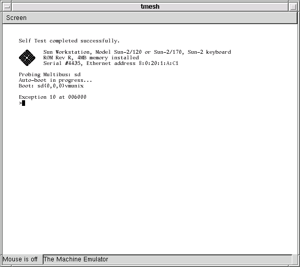
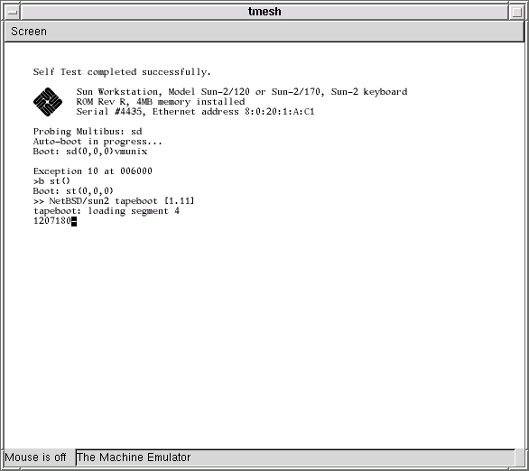
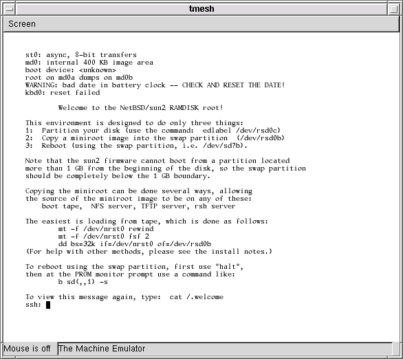

Warning: This is alpha-quality software. Don't count on it for anything. Use it at your own risk.
http://csail.mit.edu/~fredette/tme/sun2-multi-rev-R.bin
If Sun asks me to stop distributing this ROM, I will.
In general, any working directory filename that begins with my- or MY- is a file that is specific to your individual emulated machine. With the exception of the disk image, these are mostly text files, and you are encouraged to edit many of them to suit yourself.
% mkdir /some/where/my-sun2 % cd /some/where/my-sun2
Now populate this directory:
% cp /usr/pkg/share/examples/tme/SUN2-MULTIBUS ./MY-SUN2This file contains tmesh commands that create a Sun 2/120. If you don't change this file, it creates a Sun 2/120 with a bwtwo framebuffer, type-2 keyboard and mouse, one disk drive, one tape drive, and no network interface.
If you can't use the emulated bwtwo framebuffer (because, for example, you aren't running X or didn't build tme with GTK), you must edit this file to disable the GTK-based display and enable the serial console instead. Comments in the MY-SUN2 file should explain how to do this.
% cp /some/where/sun2-multi-rev-R.bin .
The tme-sun-idprom Perl script makes Sun IDPROM files. Before you can run it, you must choose an Ethernet address for your emulator - even if tme won't have access to the network. Ethernet addresses for Sun workstations always begin with 8:0:20, so pick three hexadecimal bytes XX:YY:ZZ such that 8:0:20:XX:YY:ZZ is not taken by any other machine on your LAN.
% tme-sun-idprom 2/120 8:0:20:XX:YY:ZZ > my-sun2-idprom.bin
% cp /usr/pkg/share/examples/tme/sun-keyboards.txt . % cp /usr/pkg/share/examples/tme/my-sun-macros.txt ./my-sun-macros.txtYou should not edit the sun-keyboards.txt file, however you may want to edit the my-sun-macros.txt file. The two files work together to transform key events on your keyboard into Sun type-2 scan codes.
The sun-keyboards.txt file lists all of the symbols (in X terminology, all of the "keysyms") on a Sun type-2 keyboard, and gives for each keysym a Sun type-2 scan code and some modifier information. Because Sun type-2 keyboards are never going to change, you shouldn't change this file, even if you think it lists keysyms that your keyboard doesn't have, like L1, R11, etc.
The my-sun-macros.txt file is meant to adapt your keyboard to the Sun type-2 keyboard. Any keysyms that the Sun type-2 keyboard has, that your keyboard doesn't have, can be generated by macros added to this file. For example, tmesh may complain that:
[/display0.0]: cannot generate keysym 'R9' directly: No such file or directoryThe odds are good that you don't care about generating the R9 key - it's one of the keysyms on the strange, original Sun numeric keypad. But if you absolutely must be able to generate the R9 key, you could add a line similar to the following to your my-sun-macros.txt file:
Alt_R F9 = R9Then, you could simulate pressing R9 by pressing the right Alt key and then the F9 key.
The my-sun-macros.txt that you copied from sun-macros.txt contains a small number of macros for generating the L1, L2, etc., keys. These macros should be sufficient for general use - simply ignore the tmesh warnings about other, obscure keysyms.
Under X, to learn about the keysyms present on your keyboard, the xmodmap -pk command will print out your current keyboard map. Alternately, the xev command may be a more convenient way to see what key combinations on your keyboard generate which keysyms.
% dd if=/dev/zero of=my-sun2-disk.img bs=1 count=1 seek=NNNNNNNNIt's not immediately wasteful to choose a very large disk size - this dd command will create a disk image that initially takes up almost zero real space on your host's disk. Only as the disk is populated will your host's operating system allocate more real space to the image.
Each segment of a tme virtual tape is really a regular file
on your host machine. Start by creating a new directory, under your
working directory, to hold the contents of this tape:
Making a virtual NetBSD tape
NetBSD installation on tme uses some classic tape procedures.
You will create a single virtual tape that boots the emulator into a
RAM disk kernel for labeling your virtual disk and copying a miniroot
to it, and this tape will also contain the NetBSD binary sets that the
miniroot will install onto the virtual disk.
% cd /some/where/my-sun2
% mkdir my-tape
% cd my-tape
Now download the NetBSD 1.6.1
official sun2 release. Please use a mirror
close to you.
The files you want to download and place in the my-tape directory are:
The NetBSD 1.6.1 and earlier tapeboot program has bugs that prevent it from booting a Sun 2; version 1.12 fixes these bugs, but it isn't available from an official NetBSD site yet. Download it from here and place it in the my-tape directory:
http://csail.mit.edu/~fredette/tme/sun2-tapeboot.bin
Now, your my-tape directory should have the following contents:
% ls base.tgz kern-FOURMEG.tgz netbsd.RAMDISK.gz etc.tgz miniroot.fs.gz sun2-tapeboot.binSince decompression is extremely slow on any Sun 2, it's best to decompress these files on the host:
% gzip -d *z % ls base.tar kern-FOURMEG.tar netbsd.RAMDISK etc.tar miniroot.fs sun2-tapeboot.binNow we will create the virtual tape. Although this isn't necessary, for convenience we will make numbered symlinks to these files. The numbers will correspond to positions, or segments, on the virtual tape, and we will then use those symlink names with tme:
% ln -s sun2-tapeboot.bin ./01 % touch ./02 % touch ./03 % ln -s miniroot.fs ./04 % ln -s netbsd.RAMDISK ./05 % ln -s base.tar ./06 % ln -s etc.tar ./07 % ln -s kern-FOURMEG.tar ./08Create additional symlinks for any additional binary sets that you downloaded and want to install.
(Note that tape segments two and three are empty. On a real NetBSD boot tape, they would be the RAMDISK kernels for sun3 and sun3x systems.)
% cd /some/where/my-sun2
The emulator itself is called tmesh. tmesh is a
shell for running commands that create and control emulated machines.
One day, you will be able to create and manage a whole set
of emulated machines running inside the same tmesh process,
but for now it's only been tested to handle one machine.
tmesh takes one argument on its command line: the name of a
text file containing initial commands for it to execute. In this
case, MY-SUN2 contains commands to assemble a Sun 2/120.
A new, rather blank GTK window should appear on your screen. If you
see any error messages, hopefully they're descriptive enough to help
you figure out what went wrong. Usually, the first error listed is
the real problem; when a central element of the emulated Sun 2/120
can't be created, many subsequent errors will be generated because all
of the attachments to that central element also fail.
If you don't see any error messages, at this tmesh>
prompt, give the ls command. This should give the following
output:
If the output contains all of these entries, the next step is to
load the virtual tape into the tape drive (be sure to add any additional
tape segments corresponding to additional binary sets that you want
to install):

At the end of the output, the single > is the Sun PROM
monitor prompt. The Exception error is normal - the PROM
tried to automatically boot the virtual disk that you created earlier
with dd. Because the disk is empty, the blocks that normally
contain the bootstrap are undefined.
Now, tell the PROM to boot the tape. This is typed at the Sun PROM
> prompt, not at the tmesh> prompt:

Once the RAMDISK kernel has been loaded into memory, it is relocated,
and then booted. After the RAMDISK kernel has booted, it will display
a welcome message and leave you at an ssh: (for "Simple
Shell") prompt:

Booting and using the NetBSD/sun2 RAMDISK kernel
Now that you have created the virtual tape, you must boot it. This will
run the NetBSD/sun2 RAMDISK kernel. This kernel has a very minimal
set of utilities that will allow you to label the virtual disk and copy
the miniroot to it.
% tmesh ./MY-SUN2
ignore any cannot generate keysym warnings
tmesh>
tmesh> ls
mainbus0: tme/machine/sun2 multibus my-sun2-idprom.bin
cpu0 at mainbus0: tme/ic/m68010
obio0 at mainbus0 obio: tme/generic/bus size 8MB
obmem0 at mainbus0 obmem: tme/generic/bus size 16MB
ram0 at obmem0 addr 0x0: tme/host/posix/memory ram 4MB
rom0 at obmem0 addr 0xef0000: tme/host/posix/memory rom sun2-multi-rev-R.bin
rom0 at obmem0 addr 0xef8000
clock0 at obio0 addr 0x2800: tme/machine/sun2/clock
tod0 at obio0 addr 0x3800: tme/machine/sun2/tod
zs0 at obio0 addr 0x2000 ipl 6: tme/machine/sun2/zs
mbio0 at mainbus0 mbio: tme/generic/bus size 8MB
mbmem0 addr 0x00000 at mainbus0 mbmem: tme/generic/bus size 8MB
sc0 at mbmem0 addr 0x80000 ipl 2: tme/bus/multibus/sun-sc
scsibus0 at sc0: tme/scsi/bus
bwtwo0 at obmem0 addr 0x700000 ipl 4: tme/machine/sun2/bwtwo type obmem
zs1 at obmem0 addr 0x780000 ipl 6: tme/machine/sun2/zs
kbd0 at zs1 channel A: tme/serial/keyboard type sun-type-2 macros my-sun-macros.txt map sun-keyboards.txt
ms0 at zs1 channel B: tme/serial/mouse type mousesystems-5
display0 at bwtwo0: tme/host/gtk/display
display0 at kbd0
display0 at ms0
sd0 at scsibus0: tme/scsi/disk id 0 type tme-scsi-1
disk0 at sd0: tme/host/posix/disk file my-sun2-disk.img
st0 at scsibus0: tme/scsi/tape id 4 type emulex-mt02
tape0 at st0: tme/host/posix/tape
tmesh> command tape0 load my-tape/01 my-tape/02 my-tape/03 my-tape/04 my-tape/05 my-tape/06 my-tape/07 my-tape/08
tmesh> command mainbus0 power up
After a while (the Sun 2 PROM does a good memory test), you should see
something like this:
> b st()
After a short delay, the PROM should begin booting the virtual tape:
ssh: mt -f /dev/nrst0 rewind
ssh: mt -f /dev/nrst0 fsf 3
ssh: dd bs=32k if=/dev/nrst0 of=/dev/rsd0b
ssh: halt
Booting the miniroot and running the install script
The next step is to boot the miniroot you copied to the swap partition
of your virtual disk, and run the install script it contains
to do the actual NetBSD installation.
> b sd(,,1) -s
% echo 'command mainbus0 power up' >> MY-SUN2